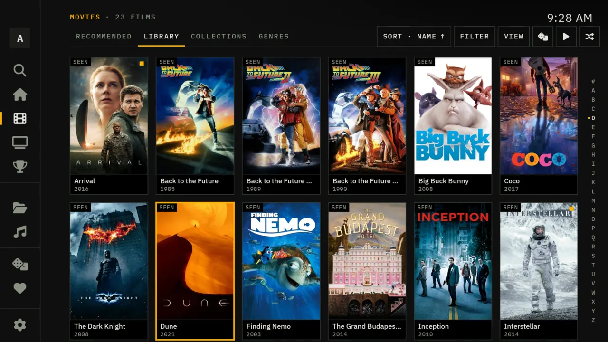
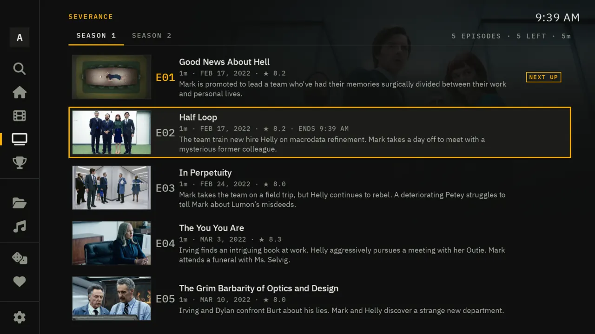
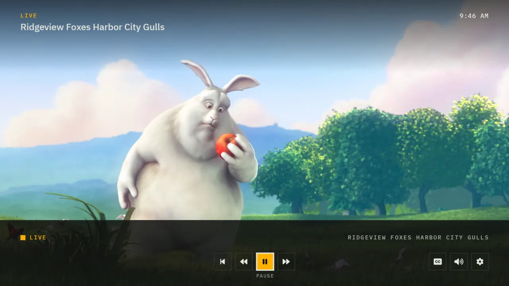
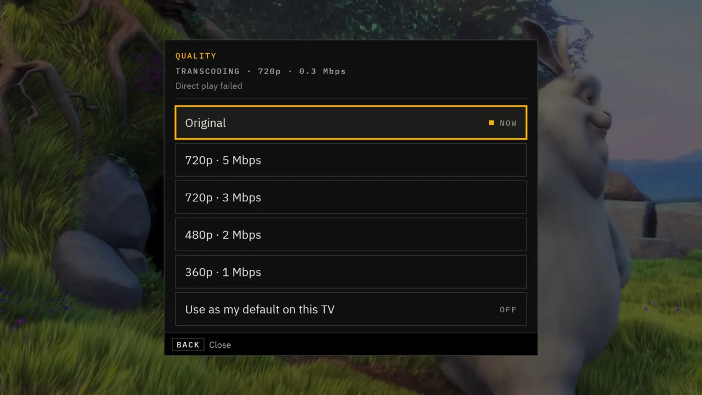
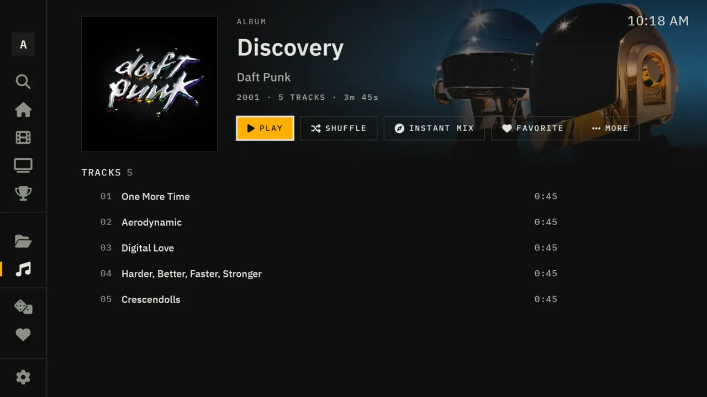
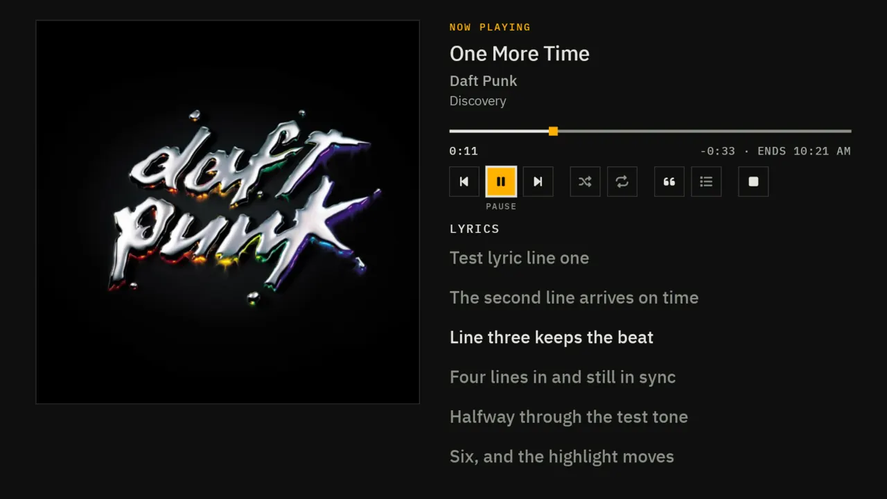
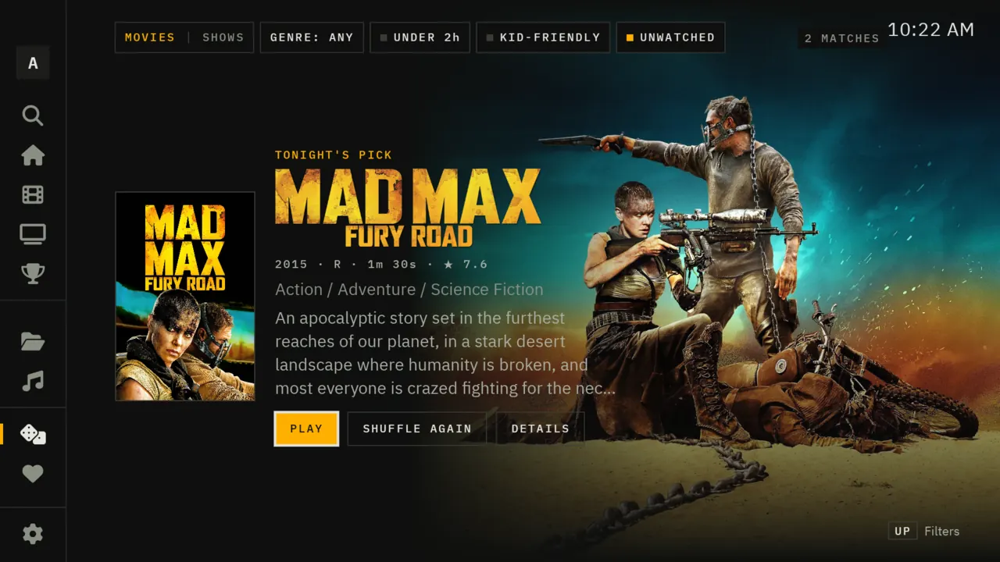
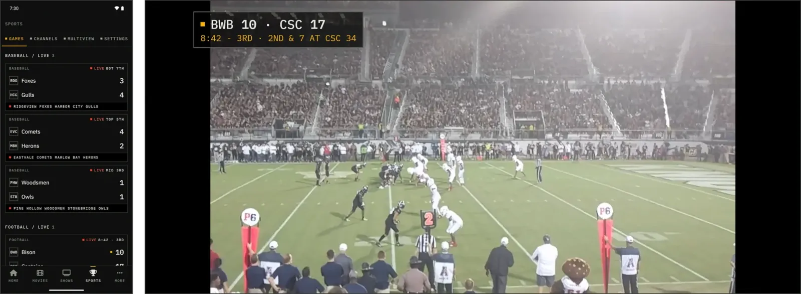
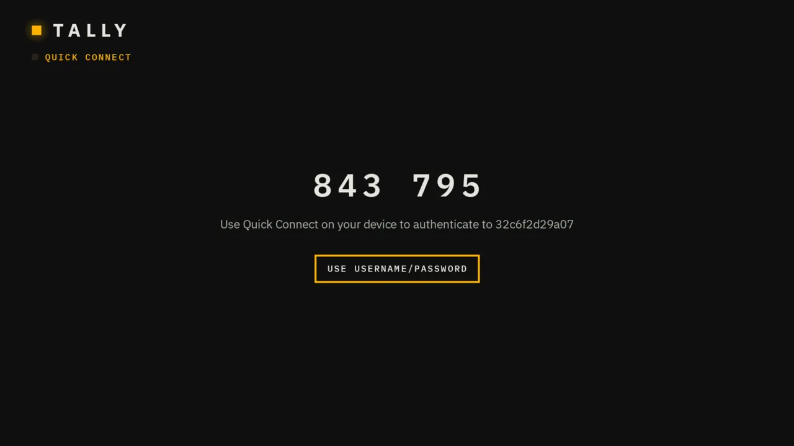
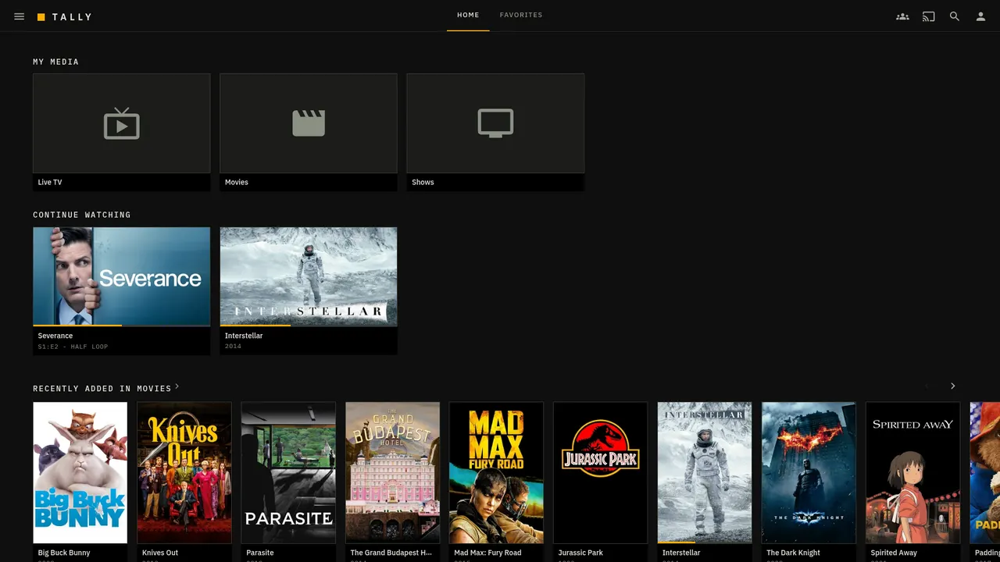

Features
A whole Jellyfin app, redrawn for the room.
Tally is built on Wholphin, so it plays nearly anything Jellyfin can serve. On top of that sits a new design, screen by screen, and the things a living room actually needs: watch parties, a picker for indecisive nights, a phone app that works offline, and a sign-in that never asks for a password on a remote.
01 · The look
Control room, off duty.
A flat, near-black screen. Square edges and hairline rules. IBM Plex Sans for anything you read, IBM Plex Mono in capitals for anything that works like an instrument: times, counts, labels, scores.
One amber light marks whatever has your attention: the card you've selected, the button that matters, the game that's live. Red means live, or something went wrong, and nothing else. No glow, no gradients for show, nothing that grows when you land on it.
- Readable from the sofa. Type set large enough to read across the room.
- Focus you never hunt for. A solid amber frame around the selected thing, on every screen.
- Plain labels. "Resume", "From the start", "Mark watched". Units stay honest: 14.8 Mbps, 1080p, 2h 35m.

02 · Home and library
Opens on what you were watching.
Home starts with what you're in the middle of, then today's games if your server has them, then what's new in each library. Rows remember where you were when you come back to them.
- A page for every library to sort, filter by genre or year, and jump through by letter.
- Collections, genres and favorites, with a mark on everything you've seen and a count of new episodes on a series.
- Search across films, shows and people, by typing or with the TV's voice search.
- A customizable home screen: choose and order its rows.

03 · Film and series pages
Know what you'll get before you press play.
A film's page has the title art, the cast, the rating, the runtime and when it will end, and a line of small boxes with the format, the audio and the subtitle tracks.
A season reads like a rundown sheet: numbered episodes, the one you're up to marked, and how far you got through it.
- Collections that carry on. When a film in a collection ends, Tally offers the next one. Otherwise it suggests something like it.
- Chapters, trailers and similar titles on the same page.


04 · The player
Everything a panel away.
Preview thumbnails while you skip. A panel that slides in from the side for audio, subtitles, playback speed, picture quality and the sleep timer. Back hides the controls first and never drops you out of the app.
If a stream is struggling, pick a lower quality right there: 4K down to 360p in small steps, on films and on live channels. The Quality panel also tells you what's happening now, direct play or transcoding, and why.
- Direct play first. Tally plays the file as it is when your TV or phone can, and has the server convert it when it can't.
- Two engines. ExoPlayer or MPV, and subtitle styling you set once.
- A default per TV. Keep a lower quality as the default on one screen only.


05 · Music
Albums with a proper page.
Albums and artists get pages of their own, with shuffle and an instant mix. The now-playing screen follows along with synced lyrics when your files have them.
On a phone, leave the app or lock the screen and the album keeps playing, with controls in the notification and on the lock screen.


06 · Watching together
Same film, different sofas.
Start a watch party from the home screen, and friends on the same server join from their own TVs or phones. Play, pause and skip happen for everyone at once. It runs on Jellyfin's SyncPlay, so the server needs nothing extra.
- Around the house. See what's playing on the other TVs, send what you're watching to another one and pick it up there.
- Play on TV. From Jellyfin in your phone's browser, start something on the TV. With the plugin, it can even follow the hottest game for you.

07 · Surprise me
For nights nobody can decide.
Surprise me picks a film or a show from your library. Narrow it to under two hours, kid-friendly or unwatched, or a genre, and shuffle until something sticks.

08 · Phones and tablets
Laid out for one hand.
The same app runs on Android phones and tablets. On a TV nothing changes; on a phone every page is rebuilt for touch.
- A bar along the bottom for Home, Movies, Shows, Sports and More.
- Touch. Tap to open or play. Press and hold anything for the menu that a long press of OK opens on the TV. Menus slide up from the bottom.
- Portrait pages, a landscape player that fills the screen, with the score bug on live games.
- Downloads. A film, an episode, a season or an album, at its original quality or a smaller size. With no server in reach, Tally opens straight to your downloads, and what you watch offline is marked watched once you're back.
- Sports, multiview and watch parties work on the phone too.


09 · Sign-in and updates
Nobody types a password with a remote.
The TV shows a 6-digit code. Open Jellyfin on your phone, go to your profile, then Quick Connect, type the code, and the TV signs itself in.
- An invite link for friends. The plugin gives the server's owner a link, a QR code and a Share button. A friend who opens it gets the steps with the server already filled in; the Tally they install already knows the address.
- It updates itself. When a new version is out, the app offers it the next time it opens: press Download & Update. Samsung and LG TVs update with the server's plugin.
- Profiles with PINs, and switching between servers and users.

10 · Jellyfin in the browser
The Tally look, for Jellyfin web.
With the plugin, Jellyfin's own web client takes on Tally's look and gets a Sports page. Nothing to install: it works in any browser, and in the apps built on the web client, like Jellyfin Media Player and Xbox.
- No Jellyfin files changed. The plugin adds the look as the page is served. Switch it off in the plugin's settings and the web client is exactly as shipped.
- Follows your version. Built for jellyfin-web 10.10, 10.11 and 12.

11 · Everything else
The rest of a good Jellyfin app.
Playback
Plays nearly anything
Wholphin's player underneath: direct play when the device can, a transcode when it can't, ExoPlayer or MPV.
Requests
Seerr, built in
Browse and request films and shows from your Seerr server, if you run one.
Network
Home network fallback
If you reach your server over the internet and the internet goes down, Tally switches to the server's home address and keeps playing.
Screensaver
A scores screensaver
For when the TV is on and nobody's watching: today's games, quietly updating.
Crashes
Reports go to your server
If the app crashes, it asks first. A report goes to your own Jellyfin server, never to the developer.
Side by side
Installs next to Jellyfin
Tally has its own name and id, so it sits beside the official Jellyfin app and Wholphin without replacing either.
Next
The part with the scoreboard: games board, score bug, box scores, multiview, Tally Pulse, commentary language, the stream ladder and recordings. See live sports.
The film and album artwork in these screenshots belongs to its owners and is shown only to picture the app with a real library. The film behind the watch-party dialog is Big Buck Bunny, © Blender Foundation, CC BY 3.0.